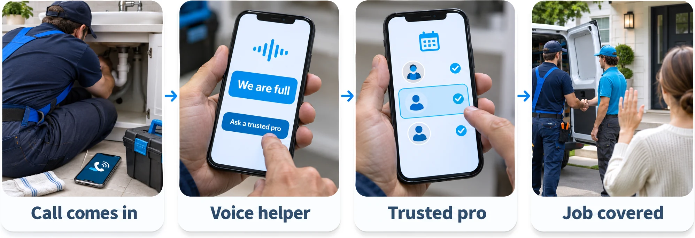
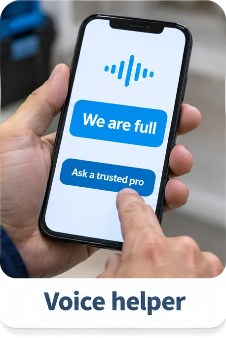
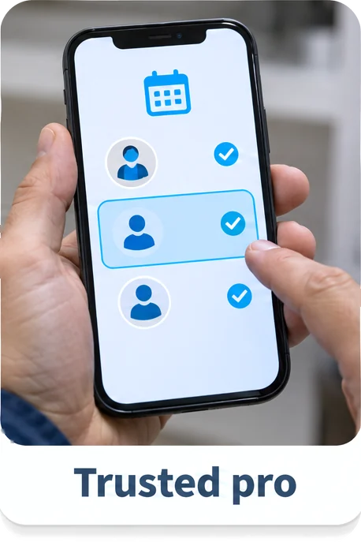

Borrow My Schedule
GrowthA bold bet

- 1

I am under a sink and a call comes in.
- 2

A voice helper says I am full and offers a trusted pro.
- 3

The caller says yes to a pro from my network.
- 4

The job is covered and I keep the customer.
Problem
When my day is full or runs long, I lose the next customer.
What you gain
A caller who cannot wait still books through me, and a pro I trust covers the job.
Brings the next customer
The caller gets an answer right away, and the pro I trust sends work back to me later.
Why build it
A full day loses the next customer, and this turns it into a covered job.
Who has it
Providers with a full week, or a day that keeps running over.

Also inside
- Fill an empty afternoon
- Warn customers about late visits
- Book a block of time
- Help after a storm